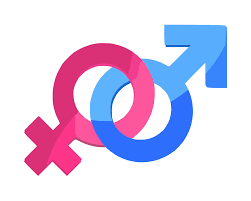

We believe that it is extremely important for the school to attack this issue, because the consequences can be very conflictive and traumatic depending on the seriousness of the inequality. This is why we created this box, for people who are affected, to make visible their issue and look for possible solutions. The project was essential for us as we raise awareness of this issue which affects many adolescents around the world which makes it very important, although we could find a solution for this problem right here at school and thanks to that being able to attack and finish with gender inequality.
Our proposal includes:
